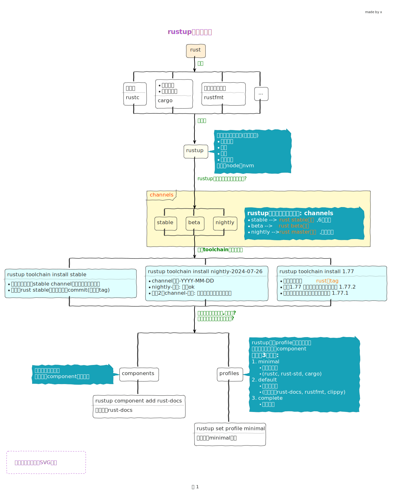
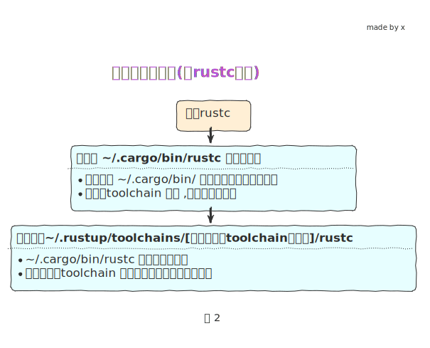

rust 环境准备
Caution
todo…
1 rustup1
Caution
对于这个rustup工具没有必要整这么细, 但是为了博客更加严谨, 我就把rustup稍微搞地更清楚一些
1.1 设计思路

1.2 安装(rustup这章可只看这个)
- 配置国内源2
- 然后查看官方安装教程3
会提示出下列信息
- 1
- 指定toolchain 从 stable channel 中下载最新的工具链
- 2
-
很显然工具链是有系统区分的,所以系统会默认给你添加上这个信息(
rustup target list命令查看),
和指定的stable channel名一起真正构成 toolchain的名字 - 3
- 配置下载哪些 components
安装过程我们可以看到 info: installing component 'rust-docs' 这类信息,说明安装了不少组件
所有组件的代理程序都安装到 ~/.cargo/bin 这个目录 (看设计思路中图2说明)
tree ~/.cargo/bin
~/.cargo/bin
├── cargo # Rust 的编译工具,包管理器,可以帮助你编译代码,运行,测试...
├── cargo-clippy
├── cargo-fmt
├── cargo-miri
├── clippy-driver
1├── rls
├── rust-analyzer
├── rust-gdb
├── rust-gdbgui
├── rust-lldb
├── rustc # rust 编译器
├── rustdoc
├── rustfmt
└── rustup- 1
-
由于我们用的
profile是default配置, 根据前面的设计思路, 这里的2个是代理程序,实际对应的可执行程序还没有安装, 需要我们额外去安装
Important
- rls (需要rust-analysis 配合使用) 已经被 rust-analyzer 取代了 ,所以我们安装 rust-analyzer 即可
- rust-analyzer4, vscode中去安装
安装额外需要的组件
# RLS的全称是:'Rust Language Server',是一个守护进程
# 用于和开发时使用的IDE进行IPC通信,完成代码提示、跳转到定义、显示变量类型等功能
# rustup component add rls --toolchain stable # RLS
# rustup component add rust-analysis --toolchain stable # 分析工具
rustup component add rust-analyzer --toolchain stable
#std是Rust的标准库. 默认情况下,Rust安装的是标准库的二进制码,而添加源码后容易方便我们查询部分标准库的实现
rustup component add rust-src --toolchain stable # std源码- 环境变量配置
- 命令自动补全
1.3 常用命令
1.3.1 全局信息
1.3.2 toolchain
Important
rustup install 命令等同于 rustup toolchain install, 所以可以省略toolchain
- 直接通过channel 方式安装
1rustup toolchain install beta --profile minimal- 1
-
--profile minimal前面说过, 配置下载哪些components, 这里表示下载最少的组件
- 使用[channel]-[data]的方式安装
- 使用 版本号
<major.minor>或<major.minor.patch>的方式安装
结果
1stable-x86_64-apple-darwin (default)
beta-x86_64-apple-darwin
nightly-2024-07-25-x86_64-apple-darwin
nightly-2024-07-26-x86_64-apple-darwin
nightly-x86_64-apple-darwin
1.64-x86_64-apple-darwin
1.77-x86_64-apple-darwin- 1
-
default 表示当前我们默认使用的toolchain
我们可以看到现实的toolchain名字都带有 -x86_64-apple-darwin,系统会自动检测,你也可以自己install时加上
1.3.3 components
2 其他准备
2.1 cargo generate5
安装
或者 直接下载可执行文件 https://github.com/cargo-generate/cargo-generate/releases 放到 ~/.cargo/bin/
使用
# templates on github
cargo generate --git https://github.com/username-on-github/mytemplate.git
# 同上
cargo generate username-on-github/mytemplate
# 同上
cargo generate gh:username-on-github/mytemplate
# 其他平台的 templates
# translates to https://gitlab.com/username-on-gitlab/mytemplate.git
cargo generate gl:username-on-gitlab/mytemplate
# translates to https://bitbucket.org/username-on-bitbucket/
cargo generate bb:username-on-bitbucket/mytemplate mytemplate.git
# translates to https://git.sr.ht/~username-on-sourcehut/mytemplate (主意有波浪号)
cargo generate sr:username-on-sourcehut/mytemplate
cargo help generate2.2 cargo deny6
# 安装 Cargo deny 用于检查依赖的安全性
# 替代 cargo-audit 这个同类型工具
cargo install --locked cargo-deny
# 在项目目录下 初始化, 会生成一个deny.toml 文件
cargo deny initdeny.toml
2.3 typos7
_typos.toml 配置文件放到项目下
[default]
extend-ignore-identifiers-re = [
# *sigh* this just isn't worth the cost of fixing
"AttributeID.*Supress.*",
]
[default.extend-identifiers]
# *sigh* this just isn't worth the cost of fixing
AttributeIDSupressMenu = "AttributeIDSupressMenu"
[default.extend-words]
# Don't correct the surname "Teh"
teh = "teh"
[files]
# 排除该目录下的所有的*.po文件,不用检查
extend-exclude = ["localized/*.po"]2.4 cargo-nextest8
2.5 pre-commit 配置
代码仓库中添加 .pre-commit-config.yaml
fail_fast: false
repos:
1 - repo: https://github.com/pre-commit/pre-commit-hooks
rev: v4.3.0
hooks:
- id: check-byte-order-marker
- id: check-case-conflict
- id: check-merge-conflict
- id: check-symlinks
- id: check-yaml
- id: end-of-file-fixer
- id: mixed-line-ending
- id: trailing-whitespace
- repo: https://github.com/psf/black
rev: 22.10.0
hooks:
- id: black
- repo: https://github.com/crate-ci/typos
rev: v1.8.1
hooks:
- id: typos
2 - repo: local
hooks:
- id: cargo-fmt
name: cargo fmt
description: Format files with rustfmt.
entry: bash -c 'cargo fmt -- --check'
language: rust
files: \.rs$
args: []
- id: cargo-deny
name: cargo deny check
description: Check cargo dependencies 检查依赖的安全性
entry: bash -c 'cargo deny check -d'
language: rust
files: \.rs$
args: []
- id: cargo-check
name: cargo check
description: Check the package for errors.
entry: bash -c 'cargo check --all'
language: rust
files: \.rs$
pass_filenames: false
- id: cargo-clippy
name: cargo clippy
description: Lint rust sources
entry: bash -c 'cargo clippy --all-targets --all-features --tests --benches -- -D warnings'
language: rust
files: \.rs$
pass_filenames: false
- id: cargo-test
name: cargo test
description: unit test for the project
entry: bash -c 'cargo nextest run --all-features'
language: rust
files: \.rs$
pass_filenames: false- 1
- 使用网络上别人提供的hook 脚本
- 2
- 自己本地自定义, 可以在下面看到自己写的脚本
3 查看文档
查看本地离线的rust文档,浏览器会自动打开文档, 可以看到好多教程可以点击查看
这个会打开 The Rust Programming Language 这本教程
4 cargo简单介绍
cargo new hello
cd hello
tree -a
# 会创建目录world, 并且 直接有 .git 纳入git管理
.
├── .git
├── .gitignore
1├── Cargo.toml
└── src
└── main.rs- 1
- cargo.toml package的一些基本信息 toml参考
Cargo.toml
运行打印的信息
- 1
-
cargo 调用 rust编译器
rustc来编译代码,生成可执行文件,会放到target/debug目录下 - 2
- 运行 可执行文件
- 3
- 输出结果
配置crates国内源9, 下载依赖包就快了
Warning
cargo 1.68 及以上版本 使用 config.toml 文件名,而不是config
这个好像更快...
或者
5 其他说明
源码和rust语言需求讨论10
- nightly版本使用实验性功能的方法, 需要讲rust版本切换到nightly, 然后在代码中添加feature语句
- 等到这个功能稳定了,就是用了新版本的编译器,它就会提示你不需要这个feature语句了